Are you a business owner wondering how to build an Ai agent? Then this detailed guide is for you. Artificial intelligence has transformed the business landscape with tools like ChatGPT, DeepSeek, and Gemini. However, AI has gone beyond these virtual assistants with a new breed of software called AI agents.
Think of AI agents as your dedicated virtual workforce. Tireless, consistent, requiring no physical infrastructure like offices, and capable of performing tasks at never before seen speeds.
Sellerscommerce.com reports that 30% of Fortune 500 companies will offer their services through only a single AI-enabled channel by 2028. Salesforce has reported that 83% of sales teams saw revenue growth in 2024 vs 66% of teams that didn’t use AI.
The lack of human resources is no longer a barrier for businesses with AI agent development, going beyond chatbots, and capable of autonomous work. You can even build custom AI agents for services you provide to customers.
Also, with the custom AI agent development services, businesses can tailor solutions according to their unique needs, unlocking innovation and efficiency. By going beyond generic automation, they assist in performing complex tasks to enhance efficiency.
So, if you are thinking about building your own AI agents for your business, this 8-step guide will walk you through the process
What is an AI Agent?
An AI agent is a software program powered by artificial intelligence, designed to work autonomously on your behalf. Imagine a scenario where routine, time-consuming tasks like form filling, appointment scheduling, and answering basic customer questions take up most of your team’s time.
This prevents your team from focusing on higher-value tasks like solving complex customer problems and driving innovation.
AI agents solve this problem by automating these repetitive tasks, freeing up your human resources to work on strategy and activities that require human skill.
Let’s look at some tasks that AI agents can perform for you.
Tasks AI Agents Can Perform:
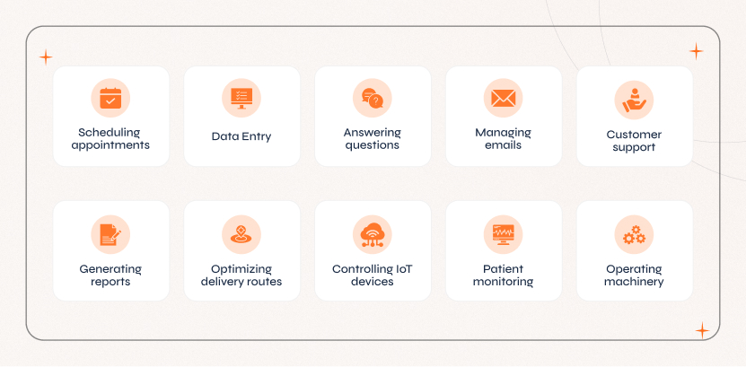
The points we’ve covered above merely scratch the surface of what AI agents can do. You can train these intelligent agents to handle a vast array of tasks for your specific needs.
Now, let’s see how these AI agents work.
How Do AI Agents Work? Understanding the Basics
To better understand how agents work, let’s break it down to the basics. There are 7 main capabilities AI agents have:
1. See and Hear (Perception):
AI agents take in information from their surroundings, this could be text, audio, or visuals.
2. Processing Information (Cognition):
Involves analyzing information using machine learning to understand what this information means.
3. Making Choices (Decision-Making):
They use what they have learned to make decisions to get desired results.
4. Taking Action (Execution):
They implement or do a specific action based on the choice made.
5. Improvement (Learning):
As they handle more tasks, they learn from them (successes and mistakes) and improve.
6. Keeping Track (Memory):
AI agents store information from their interactions for use in the future.
7.Using Tools (Utility):
They connect to external tools and online resources to enhance their capabilities.
Discover The Types of AI Agents with Examples
We can categorize AI agents into two; based on how they think (reasoning), and based on their applications in the real world.
Types of AI Agents Based on Reasoning Power
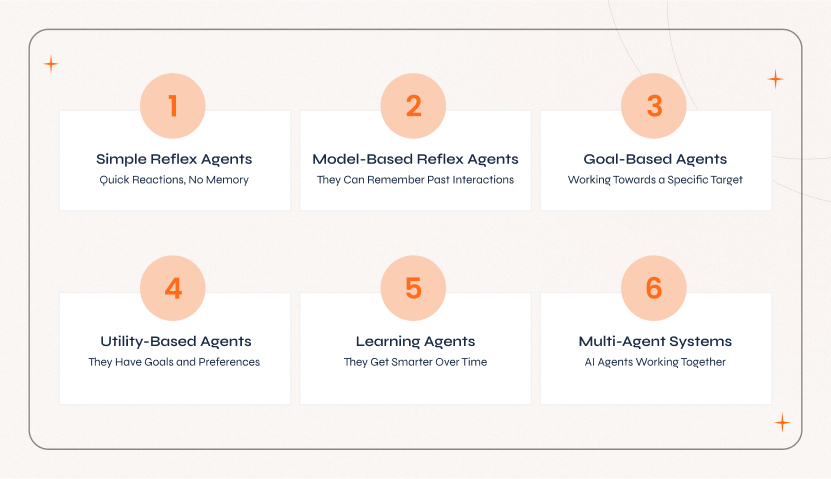
1. Simple Reflex Agents: Quick Reactions, No Memory
These are the most basic kinds of AI agents. They respond directly to inputs, based on predefined rules.
- Spam Filter Agents:
Analyses email categories like sender, content, and links to identify and isolate unwanted emails. - Work Task Categorization Agents:
Identifies emails that require actions to be taken by analyzing sender, subject, and content for project-related keywords and urgency indicators.
2. Model-Based Reflex Agents: They Can Remember Past Interactions
Model-based reflex agents remember their environment. They use this “mental picture” or "Model" to make decisions, instead of just reacting to a given input at the time.
- Inventory Level Prediction:
The agent analyzes sales data and supply chain information to predict future inventory needs and automatically triggers restocking orders. - Automated Form Completion:
The agent used previously entered data to predict and auto-fill related form fields.
3. Goal-Based Agents: Working Towards a Specific Target
These AI agents are good at reasoning and have a specific goal in mind. They choose actions that will bring them closer to that goal.
- Automated Project Scheduling:
The agent creates project timelines and ensures to hit deadlines by smartly arranging tasks and resources. - Automated Content Curation:
The agent gathers and organizes articles or other content that match your specific interests.
4. Utility-Based Agents: They Have Goals and Preferences
Utility-based AI agents choose actions based on how good the result will be, not just to reach a goal.
- Optimized Ad Placement:
These agents decide where to show online ads to maximize the number of customer clicks and purchases - Dynamic Pricing for Online Retail:
These agents adjust product prices in real-time to maximize sales and profits, considering factors like demand and competition.
5. Learning Agents: They Get Smarter Over Time
Learning agents are capable of learning from their experiences like customer feedback. They use feedback to improve performance and can adapt to changing environments.
1. Learning Element:
Makes changes based on feedback.
2. Performance Element:
Makes decisions and performs actions.
3. Critic:
Provides feedback to the learning element.
4. Problem Generator:
Suggests new actions to possibly perform.
- Fraud Detection:
The system learns patterns of fraudulent activity to identify and prevent scams. - Personalized Product Recommendations:
These agents learn the customers’ shopping habits and preferences to suggest products they are more likely to buy.
6. Multi-Agent Systems: AI Agents Working Together
It is a combination of multiple AI agents that can interact with each other to solve problems or to achieve a goal.
- Supply Chain Optimization:
Multiple AI agents coordinate to manage inventory, logistics, and production to ensure smooth and efficient delivery. - Smart Power Grids:
These agents work within a power grid to balance energy supply and demand to prevent outages and optimize resource usage.
Types of AI Agents Based on Their Application
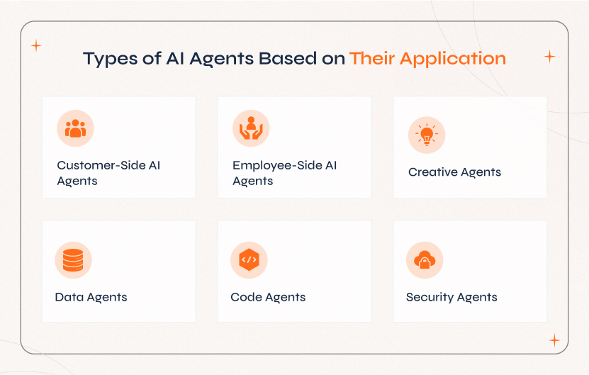
1. Customer-Side AI Agents
These agents help customers find products and services, troubleshoot problems, and get personalized experiences.
- Automated Customer Support:
These agents answer customer questions and resolve issues quickly. - Personalized Content Recommendations:
They curate news, entertainment, or product feeds based on individual customer interests.
2. Employee-Side AI Agents
These AI agents help your employees with their everyday tasks and allow them to automate tasks like scheduling meetings, finding information, and generating content. This in turn helps your business efficiently allocate your human resources.
- Automated AI Voice Agents:
These AI agents can coordinate calendars, schedule meets, and attend scheduled voice calls, eliminating the need for human employees and increasing efficiency by 60%. - Automated Report Generators:
They are capable of gathering data and generating reports automatically. This frees up your employees from manual data entry and allows them to work on important parts of your business.
3. Creative Agents
Creative AI agents can perform a host of different activities from creating content to designing graphics. This can include vector images, photorealistic images, layout, musical compositions, and so on.
- Automated Content Creation:
These agents generate marketing copy, social media posts, and draft articles. - Design Assistants:
They are capable of creating visual designs such as layouts or graphics based on user input.
4. Data Agents
Data agents are a step up from other agents because they can perform a wide range of data processing tasks. Even data science tasks like cleaning, organizing, and labeling data can now be performed using AI agents
- Automated Data Cleaning and Preparation:
These agents are capable of cleaning and organizing data, which can even be sent to another AI agent for analysis. The entire process can be automated. - Anomaly Detection:
These agents can find unusual patterns in data and alert users to potential problems or opportunities.
5. Code Agents
These types of AI agents help software engineers build products faster and ensure that they are secure. Code agents can significantly reduce the time it takes for product teams to ship products, without huge human resource overheads.
- Automated Code Generation:
These agents can generate code snippets or even entire programs based on user specifications. - Code Review Assistants:
These AI agents can analyze code and suggest improvements to make it more efficient and secure, helping developers build more robust products.
6. Security Agents
Cybersecurity is the need of the hour across industries, whether it is finance, healthcare, public services, or any industry. Security agents are an efficient way to ensure customer safety and data protection, especially if your business deals with a large number of customers.
- Threat Detection and Prevention:
These agents can monitor various systems for suspicious activity and block potential attacks. - Automated Vulnerability Scanning:
These agents can proactively scan software and systems for security weakness, and either alert users or autonomously apply fixes.
Connect with our AI experts for a tailored solution.

How to Create Your Own AI Agent: A Simple Step-by-Step Guide (8 Steps)
It’s true that AI agents are highly advanced programs, but you can create your own agent using these simple steps.
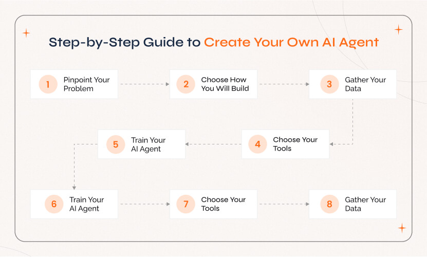
Step 1: Pinpoint Your Problem (What do you need it for?)
The first step is to decide what job you want your AI agent to do. The objective here is not to just “make things better,” but to define the exact goals. Do you want it to automate emails? Track your inventory? Or Something else? Be very clear about your goals.
Step 2: Choose How You Will Build (Who Can Create It?)
There are 4 ways you can approach this, depending on your specific situation.
Build AI agent with low-code/no-code tools:
Low code AI agent development makes it simple to create AI agents to carry out simple tasks without heavy coding. Using low-code or no-code tools, anyone can make AI agents quickly and efficiently.
Hire Freelance AI Developers:
If your AI agent is for your business, and needs to consistently perform well, hiring freelancers could be a cost-effective option.
AI Development Companies:
If your goal is custom AI agent development for more complex tasks, and if you have a decent budget, hiring a dedicated AI development service provider would be faster and cost-efficient in the long run.
Consider your specific needs and budget. Experiment with no-code/low-code tools if you’re just exploring AI agents.
For small businesses with budget constraints, freelancers can provide valuable assistance. For established businesses on a mission to improve efficiency, an AI development company is often the most strategic choice.
Step 3: Gather Your Data (What Information Will It Use?)
For your AI agents to work properly, you have to train them with your own data. Identify where your data will come from. Examples could be your customer feedback forms, reports from your engineering teams, and any data relevant to your goal.
Guide for Preprocessing Data:
1. Clean and prepare your data:
Remove inconsistencies, errors, and unwanted information.
2. Remove irrelevant information:
Focus on data directly related to your AI agent’s tasks.
3. Keep a fixed standard for all your data:
Ensure that your structure and format are consistent.
4. See if any data is missing or incomplete:
Add missing data to refine it and remove what’s not needed.
5. Categorize the data with suitable labels:
Organize your data so that your AI agent can learn in the most efficient way.
For instance, if you have an ecommerce business, you probably have a lot of customer reviews or support tickets. This can be used to train a customer service AI agent.
Step 4: Choose Your Tools (What software will you use?)
The tools you should use to build your AI agent will depend on what your goal is. Consider factors like user-friendliness, how it connects with other software and tools, and how much they will cost. An important choice you will make in this step is the AI model you will use.
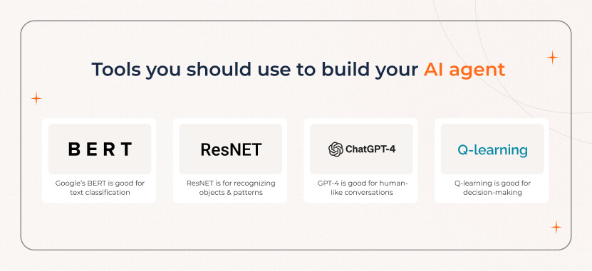
Lastly, also consider how your AI agent will work with your current systems. It will have to use APIs to easily communicate and perform tasks inside your software ecosystem.
Step 5: Train Your AI Agent (Teach it how to think)
Although you’ve already chosen a machine learning model like BERT or GPT-4, these are pre-trained models. This means that they will know about broad concepts, but you need to “teach” them how your business and processes work.
1. Use the data you have already prepared in the previous steps to train the model (using frameworks like TensorFlow or PyTorch).
2. Define your training parameters. This is you telling the AI model how much you want it to learn from the training data, how many times it should process the data, and so on.
3. Make constant tweaks to your parameters to improve the performance of your AI agent.
Step 6: Test and Improve (Make sure your AI agents work well for all tasks)
- Introduce new data that the AI model hasn’t seen before (testing dataset) to see how it performs in real-world scenarios.
- Take this a step further and introduce it to unexpected data like unusual customer requests or unclear instructions to see how it handles these situations.
Measure how accurate your AI agent is using a scoring mechanism for specific factors.
- Precision:
Check the AI agent's outputs for correct responses, and see how often it gets it right. - Recall:
How often does the AI agent produce the right answers? - F1-score:
This is a combined score that combines Precision and Recall to see the overall performance.
These scores help you understand how reliable and useful your AI agent is.
Step 7: Deploy and Monitor (Implement and see how it performs)
1. Choice a deployment method to host your AI agent (cloud platforms, physical servers)
2. Connect your AI agent with your existing software systems and workflows using APIs.
3. A “phased rollout” is the best option where you implement your AI agent in some areas of your business, see how it performs, and improve it with new appropriate changes before fully launching it.
4. Use monitoring tools to check your AI agent’s performance in real time.
5. Always be sure to keep different versions of your AI agent with you to roll it back to a previous version, in case an update you make breaks the performance.
For Example:
If you are building an AI agent for your internal teams, it may be difficult for everyone to adapt. Try giving the AI agent to one team, and then slowly expand to other teams. The feedback you collect will help you improve your AI agent, and the team where you implemented the agent can help others adopt it.
Step 8: User Training and Documentation (To ensure smooth adoption)
1. Develop User Guides: Create clear documentation for users explaining how to use your AI agent.
2. User Training Sessions: Conduct training sessions for your employees to ensure that your AI agent is effective.
3. Create Troubleshooting Guides: Write guides to show how users can solve problems and address common issues (FAQ).
Got an AI agent idea?
Turn your AI idea into reality with expert guidance
A Comparative Analysis of Traditional Methods vs Automation Using AI Agents
As a business owner, it is important to understand how AI agents can improve your operations, as compared to traditional methods. Let’s explore the some key advantages AI agents have over traditional ways of doing business for each industry.
| Industry/Business | Traditional Method | Automation with AI Agents |
|---|---|---|
| Finance |
|
|
| Healthcare |
|
|
| E-Commerce/Retail |
|
|
| Marketing |
|
|
| Supply Chain/Logistics |
|
|
| Manufacturing |
|
|
| Education |
|
|
| Human Resources |
|
|
How Can Businesses From Across Industries Use AI Agents?
Businesses across industries are opting for AI agent development because of its possibilities. From automating customer service to creating content using Generative AI, intelligent solutions are revolutionizing sectors.
Here’s a list of industries primed for AI agent adoption and potential use cases:
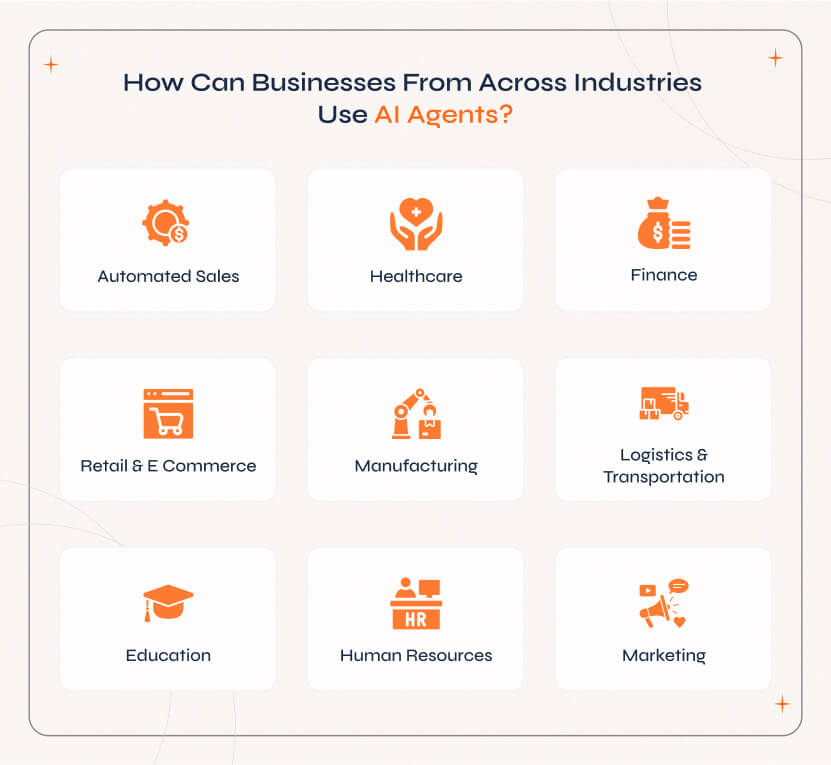
1. Automated Sales
- AI voice bots for outreach:
AI agents can analyze thousands of customer profiles and reach out to prospects using AI-generated voice via VoIP. - Chatbots for customer support:
Intelligent agents that can understand customer needs from past interactions and provide personalized support. - Automated ticket routing and resolution:
AI agents classify and prioritize support tickets, directing them to the appropriate human agent or automatically resolving them. - Personalized product recommendations:
AI agents analyze customer purchase history and browsing behavior to suggest relevant products. - Analyzing customer feedback:
These agents process customer reviews and comments to understand their sentiment and identify areas of improvement
Vodafone’s Gen Z-focused mobile network in the UK, VOXI, has introduced AI agents for customer support. They report increased customer satisfaction, boosted customer experience and reduced waiting times.
2. Healthcare
- AI-powered disease diagnosis: Custom AI agents for services like diagnostics can analyze patient data and medical images like scans to identify potential diseases early.
- Patient monitoring systems: These agents can track patient vital signs and alert healthcare providers about potential health issues.
- Automated appointment scheduling: They can coordinate patient and doctor schedules to optimize appointment times.
- Drug discovery and development: AI agents can analyze molecular structures and biological data to accelerate drug development.
- Analyzing medical imaging: AI agents use computer vision to analyze scans and x-rays to identify anomalies.
John Hopkins Hospital has reduced their ER waiting times by 30% by introducing AI agents for their patient flow management system.
3. Finance
- Fraud detection and prevention:
These agents can analyze transaction patterns to identify and prevent fraudulent activities. - Intelligent trading bots:
These agents execute trades based on real-time market data and predictive algorithms. - Personalized financial advice:
AI agents can learn an individual’s financial data and provide tailored investment and budgeting recommendations. - Automated loan processing:
AI agents can evaluate loan applications based on credit scores and financial history to automatically process loans. - Risk assessment:
These agents can analyze market data to predict potential financial risks.
CapitalGains Investments have implemented AI agents to predict market trends and have achieved a 20% increase in annual returns for clients.
4. Retail and E-Commerce
- Personalized shopping recommendations:
These agents can analyze customer preferences and purchase history to suggest relevant products. - Inventory management and optimization:
These agents can forecast demand and optimize stock levels to minimize cost and maximize sales. - Automated customer service:
These agents can handle customer queries, resolve issues, and guide users through a chatbot interface. - Demand forecasting:
AI agents can analyze historical sales data and market trends to predict future demand for products. - Dynamic pricing:
These agents can analyze market conditions and competitor pricing to adjust product prices in real-time.
Zara has implemented AI agents for inventory management, improving agility and reducing overstocking
5. Manufacturing
- Predicting machinery maintenance:
AI agents can analyze sensor data to predict and prevent machinery breakdowns. - Quality control and product defect detection:
These agents use computer vision to identify defects in products on the assembly line. - Robotic process automation (RPA):
These AI agents can automate repetitive tasks in manufacturing processes - Supply chain optimization:
AI agents analyze supply chain data to optimize logistics and reduce costs. - Real-time safety monitoring:
AI agents can use computer vision and IoT cameras to ensure that employee safety is prioritized, helping you be compliant with labor laws.
Siemens uses AI agents in its gas turbine manufacturing plants to detect equipment failures in real time. This has resulted in an increased asset uptime by 15%.
6. Logistics and Transportation
- Route optimization for delivery vehicles:
These agents can analyze traffic patterns and delivery schedules to optimize delivery routes. - Automated warehouse management:
They optimize warehouse layout and inventory management using robotics and AI software. - Tracking shipments in real-time:
AI agents can monitor shipment location and status using GPS and sensor data. - Self-driving vehicles:
These AI agents use sensors and special machine learning algorithms to navigate vehicles autonomously. - Optimizing flow of traffic:
AI agents can analyze traffic data to dynamically adjust traffic signals.
UPS uses AI agents to save millions of miles annually by optimizing their delivery routes.
7. Education
- Personalized learning:
AI agents can adapt learning materials and teaching methods to individual student needs. - Automated grading and feedback:
These agents help educators with grading assignments and providing personalized feedback to students. - Virtual tutors and assistants:
These agents can provide personalized tutoring and answer student questions through chatbots. - Study material preparation and generation:
AI agents can compile and create customized study guides based on student needs. - Automating administrative tasks:
These agents can automate tasks like attendance monitoring, and scheduling.
Georgia State University has implemented AI agents to monitor student progress and provide personalized interventions, which has resulted in a 23% increase in graduation rates.
8. Human Resources (HR)
- Automated resume screening and candidate selection:
AI agents can analyze resumes and job applications to identify qualified candidates. - Employee onboarding and training:
These agents can personalize onboarding materials and training programs for new employees, making your HR operations efficient. - Employee performance assessment and feedback:
These AI agents can analyze employee performance data to provide feedback and identify areas of improvement. - HR chatbot for employee inquiries:
These agents can answer employee questions about HR policies and procedures. - Predicting employee turnover:
AI agents can analyze employee data to predict which employees are likely to leave the company.
Unilever has transformed their recruitment process with AI agents that analyze video interviews for facial expressions, tone of voice, and word choice. This has resulted in a 75% reduction in initial screening times.
9. Marketing
- Personalized advertising campaigns:
These agents can target ads to specific customer segments based on their interests and behaviors. - Social media monitoring to find emerging trends:
AI agents can analyze social media data to identify emerging trends and customer sentiment. - Content creation:
These agents can generate marketing content such as blog posts, social media updates, and ad creatives. - Lead generation and qualification:
These agents analyze user data to identify and qualify potential leads. - Automating marketing activities:
AI agents can automate tasks like email marketing and social media posting.
Netflix has used AI agents to personalize content recommendations for their large user base. Their system is capable of analyzing billions of hours of streamed content to provide viewers with appealing shows and movies.
What AI Agent Development Platforms and Tools Can You Use?
Depending on what approach you take for building your AI agent, you have lots of options for tools. Here’s a detailed list of custom AI agent development tools and what they do.
1. No-Code Tools (for simple AI agents and chatbots)
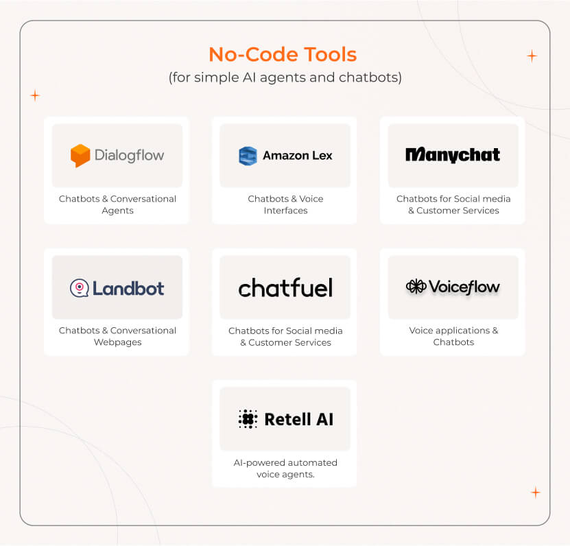
2. Low-Code Tools (for business-oriented AI agents)
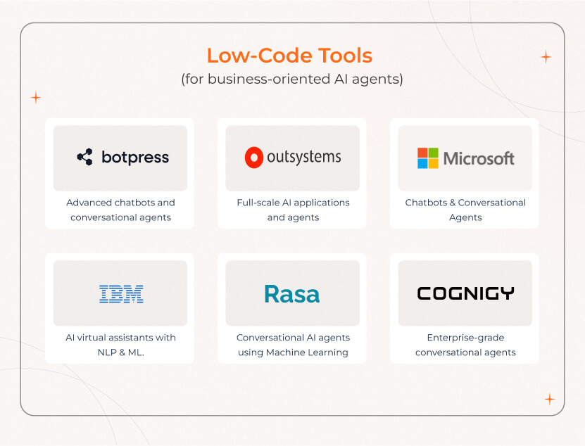
3. Custom Development Tools (for building AI agents from scratch)
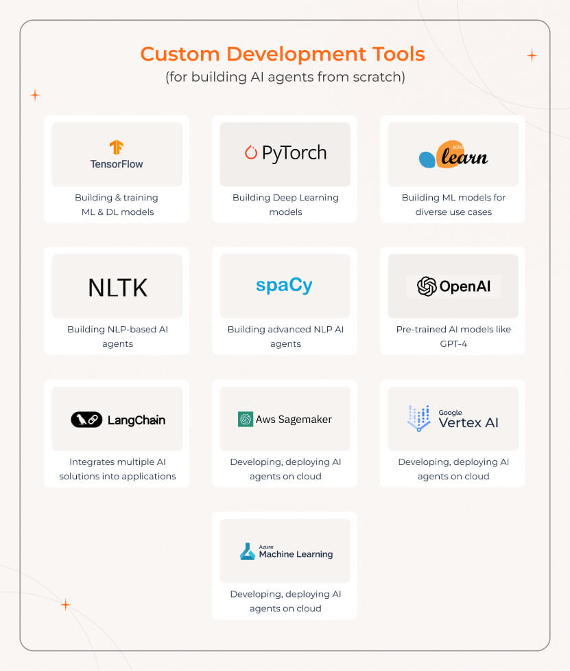
4. Programming Languages (widely used for Custom AI agent development)
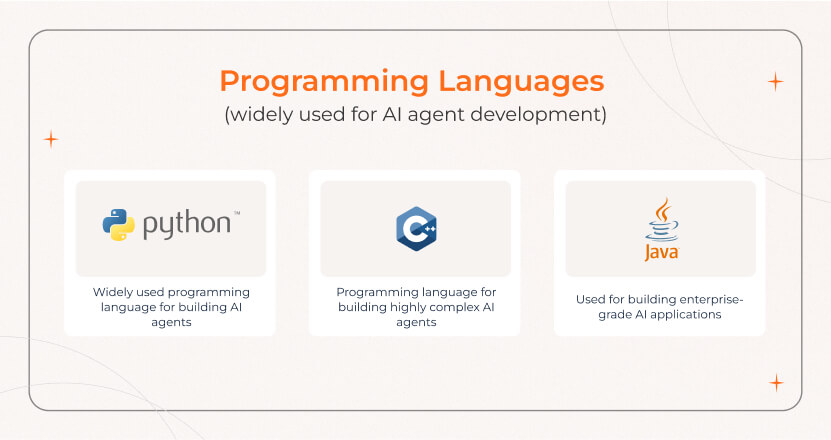
Why Investing in AI Agents is a Strategic Advantage for Businesses
The shift towards intelligent automation is not just a trend, it is a necessary step towards getting your business ready for the future. The world is increasingly moving towards efficiency, and we have to use our resources wisely. From better customer experiences to reducing costs, AI agents are the need of the hour.
Let’s explore some transformative advantages AI agents can give your business.
AI agents are very good at automating repetitive and time-consuming tasks. This includes tasks like data entry, creating reports, and answering user queries. By using AI agents for these tasks, you will be able to free up your human employees for more valuable and skill-based tasks.
Additionally, AI agents can work round the clock, ensuring that your business keeps functioning without disruptions. They also reduce the risk of human error, especially with complex, time-consuming tasks.
Modern AI agents can easily adapt to changes in workload, and dynamically allocate resources to optimize your business processes. This altogether allows you to reduce your overall overheads and deliver services faster.
Providing personalized experiences to customers is crucial to retaining them. In the past, it was difficult to manually do this at scale. AI agents are extremely capable of this, without the need for a very large team.
These agents can work autonomously and understand customer preferences and behavior using the data you already have. Once the AI agent understands your customers, they can provide personalized services like recommendations, support, and much more.
Furthermore, AI agents can provide your business with valuable customer insights using feedback and understand their sentiments. This allows you to improve your products and services quickly, and on-the-go.
The ability of AI agents to quickly process vast amounts of data helps businesses be agile. These agents are able to identify patterns, trends, and anomalies that are impossible for humans to detect. This allows you to analyze the market easily, understand various risks, and predict future outcomes
It also means that businesses will be able to understand the future needs of customers, and improve their offerings. In turn, this is a strategic advantage that businesses can use to evolve with the market conditions.
AI agents can allow businesses to discover new ways of doing tasks and find hidden opportunities. Apart from automating tasks, AI agents can even help you create entirely new products and services. For instance, AI agents can analyze customer feedback and provide you with new feature ideas that no one has even thought of.
Additionally, it can also analyze market data and user behavior to find new markets that give you a first-mover’s advantage. This ensures that your business is always diversifying your revenue through different channels.
Unlike human employees, AI agents are easy to scale according to the needs of your business. As your company expands, these agents can handle the increase in workload without having to hire additional human resources.
This added agility and flexibility enables businesses to stay ahead in a competitive global landscape.
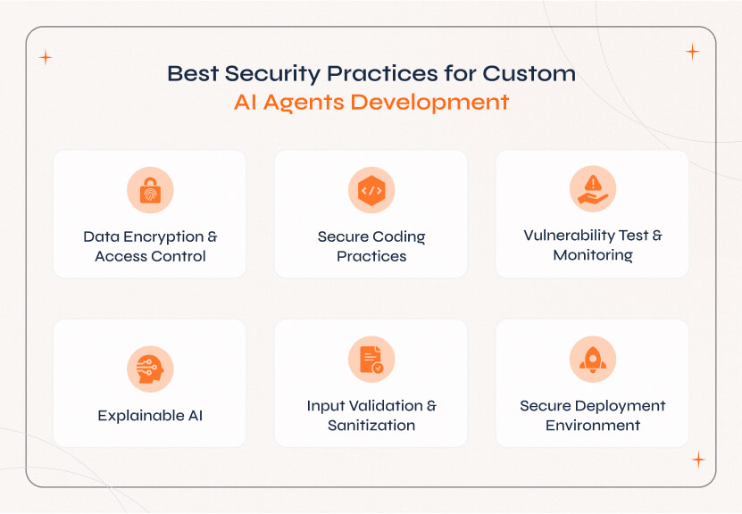
- Data Encryption and Access Control:
Encrypt sensitive data and implement strict access controls. - Secure Coding Practices:
Follow secure coding guidelines and regularly audit your code. - Vulnerability Test and Monitoring:
Conduct regular security assessments and implement real-time monitoring. - Explainable AI:
Use XAI to understand decision-making and identify potential security flaws. - Input Validation and Sanitization:
Implement robust input validation to prevent malicious inputs. - Secure Deployment Environment:
Deploy AI agents in secure and isolated environments.
It’s Time to Build Your Own AI Agent
Artificial intelligence is a remarkable software solution for businesses and learning how to build AI agents allows them to automate tasks without having huge overheads for human resources. In essence, AI agents are not meant to replace your employees. Because the human touch is very valuable if you want to build relationships with customers. Building relationships with customers is how you can create a brand, and differentiate yourself from others. However, AI agents give you the competitive advantage to increase your productivity by up to 20x, regardless of how big or small you are.
Yokesh Sankar, COO at SparkoutTech